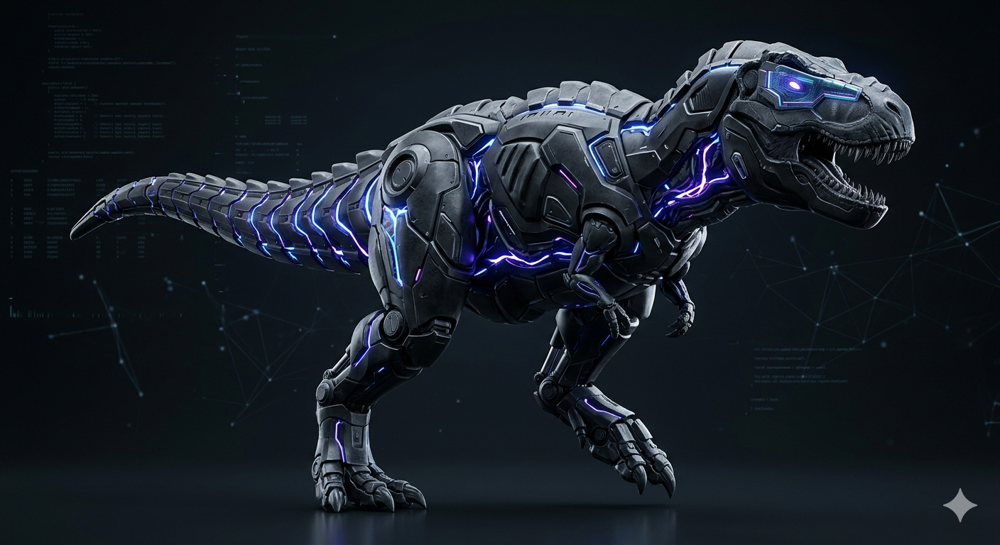

Pusat arahan digital dan solusi inovatif sehenti. Menerajui transformasi untuk sektor perniagaan, memperkasakan komuniti, dan menghubungkan generasi masa hadapan dengan kecekapan profesional.
Terokai Ketick.my
user@ketick:~/command-center$ tree -L 2
.
├── css/
│ └── style.css # UI/UX Core Styling (Minimalist Pro)
├── js/
│ ├── script.js # Intersection Observers & Canvas Particles
│ └── auth.js # Vault Security & Session Validation
├── index.html # Public Ecosystem Interface
├── login.html # Encrypted Vault Gateway
└── admin-dashboard.html # Master Command Center (Classified)
3 directories, 6 files
user@ketick:~/command-center$ _